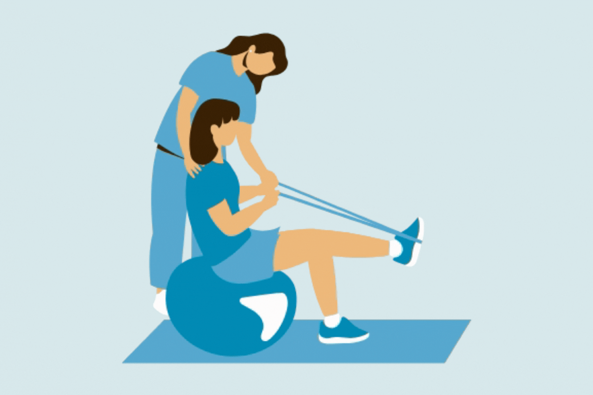
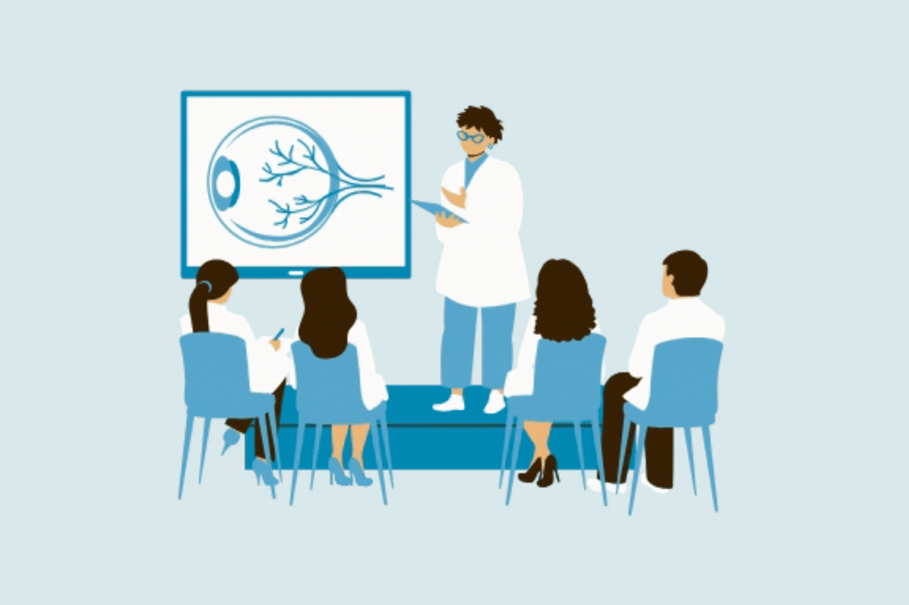

Zapojené instituce


Inspirace pro mladé výzkumníky od zkušených kolegů.
Přednášky odborníků z aplikační sféry a ukázky možností spolupráce.

Reálné příklady z praxe a technologie zavedené ve skutečném užívání.

Praktické workshopy zaměřené na vědecko-výzkumná témata.
+420 727 802 314
barbora.zoubkova@fnhk.cz

Free AI Website Software